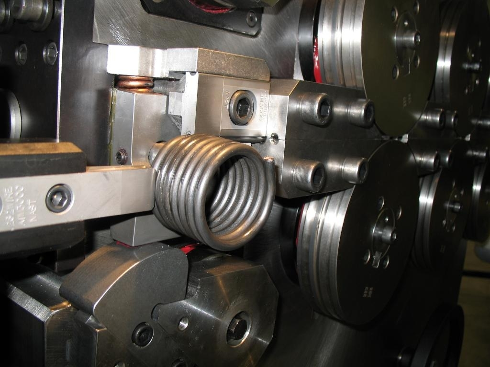

Boixadera es sinónimo de resortes en la Argentina
Somos una empresa familiar fundada en 1938 y dedicada a la fabricación de resortes de todo tipo y ejes flexibles proveyendo a la industria de un producto de calidad en plazos cortos al mismo tiempo que brindamos asesoramiento técnico de primer nivel. Producimos resortes y ejes flexibles estándar o personalizados utilizando diferentes materiales según la necesidad. Nosotros producimos: Resortes de compresión cilíndricos o cónicos, resortes de tracción también llamados resortes de extensión, resortes de torsión, ejes flexibles, piezas dobladas de alambre, anillos y anillos elásticos. Nuestro trabajo se caracteriza por la calidad de los productos terminados y los tiempos de entrega debido a décadas de experiencia, personal altamente calificado y ciclos de producción optimizados.
